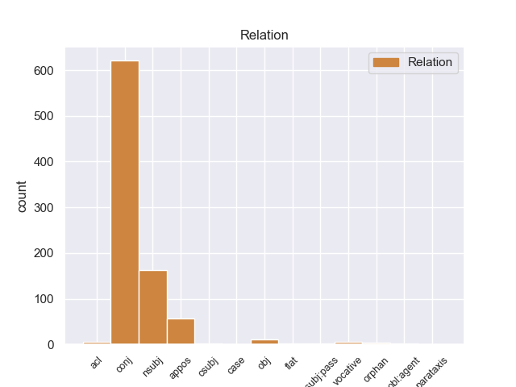
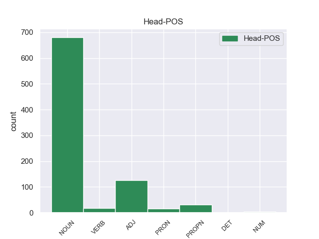
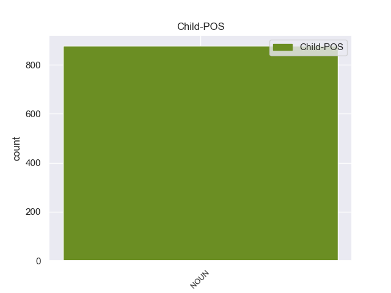

Distribution of features within this leaf



Agreement Rules sorted by frequency.
- When the dependent token is the conjunct(conj) of the head token, and the dependent token is NOUN.
1 Σε _ _ _ _ 0 _ _ _
2 κοντινή _ _ _ _ 0 _ _ _
3 απόσταση _ _ _ _ 0 _ _ _
4 από _ _ _ _ 0 _ _ _
5 τον _ _ _ _ 0 _ _ _
6 Αρτεμώνα _ _ _ _ 0 _ _ _
7 βρίσκεται _ _ _ _ 0 _ _ _
8 η _ _ _ _ 0 _ _ _
9 Απολλωνία Απολλωνία PROPN PROPN Case=Nom|Gender=Fem|Number=Sing 0 _ _ _
10 και _ _ _ _ 0 _ _ _
11 τα _ _ _ _ 0 _ _ _
12 χωριά χωριό NOUN NOUN Case=Nom|Gender=Neut|Number=Plur 9 conj _ _
13 Άγιος _ _ _ _ 0 _ _ _
14 Λουκάς _ _ _ _ 0 _ _ _
15 και _ _ _ _ 0 _ _ _
16 Άνω _ _ _ _ 0 _ _ _
17 Πετάλι _ _ _ _ 0 _ _ _
18 . _ _ _ _ 0 _ _ _
1 Θα _ _ _ _ 0 _ _ _
2 ήθελα _ _ _ _ 0 _ _ _
3 να _ _ _ _ 0 _ _ _
4 επιστήσω _ _ _ _ 0 _ _ _
5 την _ _ _ _ 0 _ _ _
6 προσοχή _ _ _ _ 0 _ _ _
7 όλων _ _ _ _ 0 _ _ _
8 των _ _ _ _ 0 _ _ _
9 συναδέλφων _ _ _ _ 0 _ _ _
10 σ _ _ _ _ 0 _ _ _
11 το _ _ _ _ 0 _ _ _
12 γεγονός _ _ _ _ 0 _ _ _
13 ότι _ _ _ _ 0 _ _ _
14 , _ _ _ _ 0 _ _ _
15 εάν _ _ _ _ 0 _ _ _
16 υπάρχουν _ _ _ _ 0 _ _ _
17 κάποιες _ _ _ _ 0 _ _ _
18 ελευθερίες _ _ _ _ 0 _ _ _
19 οι _ _ _ _ 0 _ _ _
20 οποίες _ _ _ _ 0 _ _ _
21 είναι _ _ _ _ 0 _ _ _
22 ζωτικής _ _ _ _ 0 _ _ _
23 σημασίας _ _ _ _ 0 _ _ _
24 για _ _ _ _ 0 _ _ _
25 την _ _ _ _ 0 _ _ _
26 άσκηση _ _ _ _ 0 _ _ _
27 του _ _ _ _ 0 _ _ _
28 λειτουργήματος _ _ _ _ 0 _ _ _
29 της _ _ _ _ 0 _ _ _
30 δημόσιας _ _ _ _ 0 _ _ _
31 εκπροσώπησης _ _ _ _ 0 _ _ _
32 , _ _ _ _ 0 _ _ _
33 ιδίως _ _ _ _ 0 _ _ _
34 για _ _ _ _ 0 _ _ _
35 ένα _ _ _ _ 0 _ _ _
36 Κοινοβούλιο _ _ _ _ 0 _ _ _
37 σαν _ _ _ _ 0 _ _ _
38 το _ _ _ _ 0 _ _ _
39 δικό _ _ _ _ 0 _ _ _
40 μας _ _ _ _ 0 _ _ _
41 , _ _ _ _ 0 _ _ _
42 η _ _ _ _ 0 _ _ _
43 ελευθερία ελευθερία NOUN NOUN Case=Nom|Gender=Fem|Number=Sing 63 nsubj _ _
44 της _ _ _ _ 0 _ _ _
45 επικοινωνίας _ _ _ _ 0 _ _ _
46 με _ _ _ _ 0 _ _ _
47 άλλους _ _ _ _ 0 _ _ _
48 πολίτες _ _ _ _ 0 _ _ _
49 και _ _ _ _ 0 _ _ _
50 με _ _ _ _ 0 _ _ _
51 τους _ _ _ _ 0 _ _ _
52 πολίτες _ _ _ _ 0 _ _ _
53 τρίτων _ _ _ _ 0 _ _ _
54 χωρών _ _ _ _ 0 _ _ _
55 , _ _ _ _ 0 _ _ _
56 καθώς _ _ _ _ 0 _ _ _
57 και _ _ _ _ 0 _ _ _
58 η _ _ _ _ 0 _ _ _
59 ελευθερία _ _ _ _ 0 _ _ _
60 μετακίνησης _ _ _ _ 0 _ _ _
61 , _ _ _ _ 0 _ _ _
62 είναι _ _ _ _ 0 _ _ _
63 κρίσιμες κρίσιμος ADJ ADJ Case=Nom|Gender=Fem|Number=Plur 0 _ _ _
64 για _ _ _ _ 0 _ _ _
65 τη _ _ _ _ 0 _ _ _
66 διεκπεραίωση _ _ _ _ 0 _ _ _
67 του _ _ _ _ 0 _ _ _
68 έργου _ _ _ _ 0 _ _ _
69 μας _ _ _ _ 0 _ _ _
70 . _ _ _ _ 0 _ _ _
1 " _ _ _ _ 0 _ _ _
2 Όλοι _ _ _ _ 0 _ _ _
3 εδώ _ _ _ _ 0 _ _ _
4 είναι _ _ _ _ 0 _ _ _
5 τρομαγμένοι _ _ _ _ 0 _ _ _
6 γιατί _ _ _ _ 0 _ _ _
7 κανείς _ _ _ _ 0 _ _ _
8 δεν _ _ _ _ 0 _ _ _
9 ξέρει _ _ _ _ 0 _ _ _
10 τι _ _ _ _ 0 _ _ _
11 πρόκειται _ _ _ _ 0 _ _ _
12 να _ _ _ _ 0 _ _ _
13 συμβεί _ _ _ _ 0 _ _ _
14 " _ _ _ _ 0 _ _ _
15 , _ _ _ _ 0 _ _ _
16 λέει _ _ _ _ 0 _ _ _
17 ο _ _ _ _ 0 _ _ _
18 Γιούντορ Γιούντορ PROPN PROPN Case=Nom|Gender=Masc|Number=Sing 0 _ _ _
19 , _ _ _ _ 0 _ _ _
20 κάτοικος κάτοικος NOUN NOUN Case=Nom|Gender=Masc|Number=Sing 18 appos _ _
21 του _ _ _ _ 0 _ _ _
22 Μπαχτσισαράι _ _ _ _ 0 _ _ _
23 . _ _ _ _ 0 _ _ _
1 Θα _ _ _ _ 0 _ _ _
2 επανέλθει _ _ _ _ 0 _ _ _
3 αναβαθμισμένο αναβαθμίζω VERB VERB Aspect=Perf|Case=Acc|Gender=Neut|Number=Sing|VerbForm=Part|Voice=Pass 0 _ _ _
4 το _ _ _ _ 0 _ _ _
5 καθεστώς καθεστώς NOUN NOUN Case=Acc|Gender=Neut|Number=Sing 3 obj _ _
6 παρέμβασης _ _ _ _ 0 _ _ _
7 που _ _ _ _ 0 _ _ _
8 προστάτευε _ _ _ _ 0 _ _ _
9 στοιχειωδώς _ _ _ _ 0 _ _ _
10 τον _ _ _ _ 0 _ _ _
11 παραγωγό _ _ _ _ 0 _ _ _
12 ; _ _ _ _ 0 _ _ _
1 Η _ _ _ _ 0 _ _ _
2 Κέρκυρα _ _ _ _ 0 _ _ _
3 , _ _ _ _ 0 _ _ _
4 πρωτεύουσα _ _ _ _ 0 _ _ _
5 του _ _ _ _ 0 _ _ _
6 νησιού _ _ _ _ 0 _ _ _
7 με _ _ _ _ 0 _ _ _
8 χαρακτηριστικό _ _ _ _ 0 _ _ _
9 της _ _ _ _ 0 _ _ _
10 γνώρισμα γνώρισμα NOUN NOUN Case=Acc|Gender=Neut|Number=Sing 0 _ _ _
11 τα _ _ _ _ 0 _ _ _
12 βενετσιάνικα _ _ _ _ 0 _ _ _
13 καντούνια καντούνι NOUN NOUN Case=Acc|Gender=Neut|Number=Plur 10 acl _ _
14 και _ _ _ _ 0 _ _ _
15 τα _ _ _ _ 0 _ _ _
16 αγγλικά _ _ _ _ 0 _ _ _
17 αρχοντικά _ _ _ _ 0 _ _ _
18 αποτελεί _ _ _ _ 0 _ _ _
19 διεθνές _ _ _ _ 0 _ _ _
20 τουριστικό _ _ _ _ 0 _ _ _
21 κέντρο _ _ _ _ 0 _ _ _
22 . _ _ _ _ 0 _ _ _
1 Προτάθηκαν _ _ _ _ 0 _ _ _
2 για _ _ _ _ 0 _ _ _
3 τη _ _ _ _ 0 _ _ _
4 θέση _ _ _ _ 0 _ _ _
5 του _ _ _ _ 0 _ _ _
6 Γενικού _ _ _ _ 0 _ _ _
7 Διοικητή _ _ _ _ 0 _ _ _
8 του _ _ _ _ 0 _ _ _
9 νησιού _ _ _ _ 0 _ _ _
10 οι _ _ _ _ 0 _ _ _
11 Δροζ _ _ _ _ 0 _ _ _
12 , _ _ _ _ 0 _ _ _
13 Σέφερ _ _ _ _ 0 _ _ _
14 , _ _ _ _ 0 _ _ _
15 ο _ _ _ _ 0 _ _ _
16 Μαυροβούνιος _ _ _ _ 0 _ _ _
17 Πέτροβιτς _ _ _ _ 0 _ _ _
18 Μπόζα _ _ _ _ 0 _ _ _
19 , _ _ _ _ 0 _ _ _
20 ο _ _ _ _ 0 _ _ _
21 πρίγκιπας _ _ _ _ 0 _ _ _
22 Βάττεμβεργ _ _ _ _ 0 _ _ _
23 ενώ _ _ _ _ 0 _ _ _
24 οι _ _ _ _ 0 _ _ _
25 Τούρκοι _ _ _ _ 0 _ _ _
26 ήθελαν _ _ _ _ 0 _ _ _
27 γι' _ _ _ _ 0 _ _ _
28 αυτή _ _ _ _ 0 _ _ _
29 τη _ _ _ _ 0 _ _ _
30 θέση _ _ _ _ 0 _ _ _
31 τον _ _ _ _ 0 _ _ _
32 Ανθόπουλο Ανθόπουλος PROPN PROPN Case=Acc|Gender=Masc|Number=Sing 0 _ _ _
33 πασά πασάς NOUN NOUN Case=Acc|Gender=Masc|Number=Sing 32 flat _ SpaceAfter=No
34 . _ _ _ _ 0 _ _ _
1 Σ _ _ _ _ 0 _ _ _
2 το _ _ _ _ 0 _ _ _
3 ένα _ _ _ _ 0 _ _ _
4 κράτος _ _ _ _ 0 _ _ _
5 μπορεί _ _ _ _ 0 _ _ _
6 κανείς _ _ _ _ 0 _ _ _
7 να _ _ _ _ 0 _ _ _
8 οδηγεί _ _ _ _ 0 _ _ _
9 με _ _ _ _ 0 _ _ _
10 90 _ _ _ _ 0 _ _ _
11 χιλιόμετρα _ _ _ _ 0 _ _ _
12 την _ _ _ _ 0 _ _ _
13 ώρα _ _ _ _ 0 _ _ _
14 , _ _ _ _ 0 _ _ _
15 σ _ _ _ _ 0 _ _ _
16 το _ _ _ _ 0 _ _ _
17 άλλο _ _ _ _ 0 _ _ _
18 με _ _ _ _ 0 _ _ _
19 100 _ _ _ _ 0 _ _ _
20 χιλιόμετρα _ _ _ _ 0 _ _ _
21 την _ _ _ _ 0 _ _ _
22 ώρα _ _ _ _ 0 _ _ _
23 , _ _ _ _ 0 _ _ _
24 ενώ _ _ _ _ 0 _ _ _
25 σ _ _ _ _ 0 _ _ _
26 το _ _ _ _ 0 _ _ _
27 επόμενο _ _ _ _ 0 _ _ _
28 κράτος κράτος NOUN NOUN Case=Acc|Gender=Neut|Number=Sing 0 _ _ _
29 μέλος _ _ _ _ 0 _ _ _
30 μόλις _ _ _ _ 0 _ _ _
31 με _ _ _ _ 0 _ _ _
32 80 _ _ _ _ 0 _ _ _
33 χιλιόμετρα χιλιόμετρο NOUN NOUN Case=Acc|Gender=Neut|Number=Plur 28 orphan _ _
34 την _ _ _ _ 0 _ _ _
35 ώρα _ _ _ _ 0 _ _ _
36 . _ _ _ _ 0 _ _ _
1 Υπάρχουν _ _ _ _ 0 _ _ _
2 πράγματι _ _ _ _ 0 _ _ _
3 συνάδελφοί _ _ _ _ 0 _ _ _
4 μας _ _ _ _ 0 _ _ _
5 οι _ _ _ _ 0 _ _ _
6 οποίοι _ _ _ _ 0 _ _ _
7 καταδικάζουν _ _ _ _ 0 _ _ _
8 εδώ _ _ _ _ 0 _ _ _
9 την _ _ _ _ 0 _ _ _
10 παιδική _ _ _ _ 0 _ _ _
11 πορνογραφία _ _ _ _ 0 _ _ _
12 , _ _ _ _ 0 _ _ _
13 ωστόσο _ _ _ _ 0 _ _ _
14 ζητούν _ _ _ _ 0 _ _ _
15 , _ _ _ _ 0 _ _ _
16 παραδείγματος _ _ _ _ 0 _ _ _
17 χάρη _ _ _ _ 0 _ _ _
18 , _ _ _ _ 0 _ _ _
19 να _ _ _ _ 0 _ _ _
20 μπορούν _ _ _ _ 0 _ _ _
21 να _ _ _ _ 0 _ _ _
22 υιοθετούν _ _ _ _ 0 _ _ _
23 παιδιά παιδί NOUN NOUN Case=Acc|Gender=Neut|Number=Plur 26 case _ _
24 τα _ _ _ _ 0 _ _ _
25 ομοφυλόφιλα _ _ _ _ 0 _ _ _
26 ζευγάρια ζευγάριο NOUN NOUN Case=Acc|Gender=Neut|Number=Plur 0 _ _ _
27 - _ _ _ _ 0 _ _ _
28 και _ _ _ _ 0 _ _ _
29 γιατί _ _ _ _ 0 _ _ _
30 μάλιστα _ _ _ _ 0 _ _ _
31 να _ _ _ _ 0 _ _ _
32 περιοριστούμε _ _ _ _ 0 _ _ _
33 μόνο _ _ _ _ 0 _ _ _
34 σε _ _ _ _ 0 _ _ _
35 ζευγάρια _ _ _ _ 0 _ _ _
36 . _ _ _ _ 0 _ _ _
1 Επίσης _ _ _ _ 0 _ _ _
2 , _ _ _ _ 0 _ _ _
3 για _ _ _ _ 0 _ _ _
4 παράδειγμα _ _ _ _ 0 _ _ _
5 , _ _ _ _ 0 _ _ _
6 χώρες _ _ _ _ 0 _ _ _
7 οι _ _ _ _ 0 _ _ _
8 οποίες _ _ _ _ 0 _ _ _
9 διαθέτουν _ _ _ _ 0 _ _ _
10 σχεδόν _ _ _ _ 0 _ _ _
11 αποκλειστικά _ _ _ _ 0 _ _ _
12 συστήματα _ _ _ _ 0 _ _ _
13 κάλυψης _ _ _ _ 0 _ _ _
14 του _ _ _ _ 0 _ _ _
15 κεφαλαίου _ _ _ _ 0 _ _ _
16 , _ _ _ _ 0 _ _ _
17 όπως _ _ _ _ 0 _ _ _
18 για _ _ _ _ 0 _ _ _
19 παράδειγμα _ _ _ _ 0 _ _ _
20 η _ _ _ _ 0 _ _ _
21 Μεγάλη _ _ _ _ 0 _ _ _
22 Βρετανία _ _ _ _ 0 _ _ _
23 , _ _ _ _ 0 _ _ _
24 δεν _ _ _ _ 0 _ _ _
25 ανταποκρίνονται _ _ _ _ 0 _ _ _
26 σ _ _ _ _ 0 _ _ _
27 τις _ _ _ _ 0 _ _ _
28 προσδοκίες _ _ _ _ 0 _ _ _
29 , _ _ _ _ 0 _ _ _
30 επειδή _ _ _ _ 0 _ _ _
31 οι _ _ _ _ 0 _ _ _
32 κίνδυνοι _ _ _ _ 0 _ _ _
33 για _ _ _ _ 0 _ _ _
34 τις _ _ _ _ 0 _ _ _
35 αρχές _ _ _ _ 0 _ _ _
36 είναι _ _ _ _ 0 _ _ _
37 ελάχιστοι _ _ _ _ 0 _ _ _
38 , _ _ _ _ 0 _ _ _
39 αλλά _ _ _ _ 0 _ _ _
40 η _ _ _ _ 0 _ _ _
41 κάλυψη κάλυψη NOUN NOUN Case=Nom|Gender=Fem|Number=Sing 47 nsubj:pass _ _
42 για _ _ _ _ 0 _ _ _
43 τους _ _ _ _ 0 _ _ _
44 δικαιούχους _ _ _ _ 0 _ _ _
45 συντάξεων _ _ _ _ 0 _ _ _
46 εξαιρετικά _ _ _ _ 0 _ _ _
47 περιορισμένη περιορίζω VERB VERB Aspect=Perf|Case=Nom|Gender=Fem|Number=Sing|VerbForm=Part|Voice=Pass 0 _ _ _
48 . _ _ _ _ 0 _ _ _
1 Εν _ _ _ _ 0 _ _ _
2 πάση _ _ _ _ 0 _ _ _
3 περιπτώσει _ _ _ _ 0 _ _ _
4 , _ _ _ _ 0 _ _ _
5 είναι _ _ _ _ 0 _ _ _
6 σαφές σαφής ADJ ADJ Case=Nom|Gender=Neut|Number=Sing 0 _ _ _
7 ότι _ _ _ _ 0 _ _ _
8 αυτό _ _ _ _ 0 _ _ _
9 που _ _ _ _ 0 _ _ _
10 εγκρίναμε _ _ _ _ 0 _ _ _
11 σήμερα _ _ _ _ 0 _ _ _
12 είναι _ _ _ _ 0 _ _ _
13 προϊόν προϊόν NOUN NOUN Case=Nom|Gender=Neut|Number=Sing 6 csubj _ _
14 πολύ _ _ _ _ 0 _ _ _
15 βαθιάς _ _ _ _ 0 _ _ _
16 σκέψης _ _ _ _ 0 _ _ _
17 και _ _ _ _ 0 _ _ _
18 αποτελεί _ _ _ _ 0 _ _ _
19 ένα _ _ _ _ 0 _ _ _
20 δομημένο _ _ _ _ 0 _ _ _
21 σχέδιο _ _ _ _ 0 _ _ _
22 κανονισμού _ _ _ _ 0 _ _ _
23 , _ _ _ _ 0 _ _ _
24 αλλά _ _ _ _ 0 _ _ _
25 χρειάζεται _ _ _ _ 0 _ _ _
26 να _ _ _ _ 0 _ _ _
27 διεξαχθούν _ _ _ _ 0 _ _ _
28 περαιτέρω _ _ _ _ 0 _ _ _
29 διαβουλεύσεις _ _ _ _ 0 _ _ _
30 και _ _ _ _ 0 _ _ _
31 αν _ _ _ _ 0 _ _ _
32 από _ _ _ _ 0 _ _ _
33 αυτές _ _ _ _ 0 _ _ _
34 ανακύψουν _ _ _ _ 0 _ _ _
35 σημαντικά _ _ _ _ 0 _ _ _
36 και _ _ _ _ 0 _ _ _
37 πειστικά _ _ _ _ 0 _ _ _
38 επιχειρήματα _ _ _ _ 0 _ _ _
39 , _ _ _ _ 0 _ _ _
40 φυσικά _ _ _ _ 0 _ _ _
41 θα _ _ _ _ 0 _ _ _
42 τα _ _ _ _ 0 _ _ _
43 λάβουμε _ _ _ _ 0 _ _ _
44 πολύ _ _ _ _ 0 _ _ _
45 σοβαρά _ _ _ _ 0 _ _ _
46 υπόψη _ _ _ _ 0 _ _ _
47 . _ _ _ _ 0 _ _ _
1 Σκιάθος Σκιάθος PROPN PROPN Case=Nom|Gender=Fem|Number=Sing 0 _ _ _
2 - _ _ _ _ 0 _ _ _
3 Η _ _ _ _ 0 _ _ _
4 Ιερά _ _ _ _ 0 _ _ _
5 Μονή μονή NOUN NOUN Case=Nom|Gender=Fem|Number=Sing 1 parataxis _ _
6 Ευαγγελίστριας _ _ _ _ 0 _ _ _
7 . _ _ _ _ 0 _ _ _
Disagree Examples:
1 Η _ _ _ _ 0 _ _ _
2 σχετική _ _ _ _ 0 _ _ _
3 αναφορά αναφορά NOUN NOUN Case=Nom|Gender=Fem|Number=Sing 20 nsubj _ SpaceAfter=No
4 , _ _ _ _ 0 _ _ _
5 λοιπόν _ _ _ _ 0 _ _ _
6 , _ _ _ _ 0 _ _ _
7 σ _ _ _ _ 0 _ _ _
8 την _ _ _ _ 0 _ _ _
9 κατά _ _ _ _ 0 _ _ _
10 τα _ _ _ _ 0 _ _ _
11 άλλα _ _ _ _ 0 _ _ _
12 εξαιρετική _ _ _ _ 0 _ _ _
13 έκθεση _ _ _ _ 0 _ _ _
14 του _ _ _ _ 0 _ _ _
15 κ. _ _ _ _ 0 _ _ _
16 Haarder _ _ _ _ 0 _ _ _
17 είναι _ _ _ _ 0 _ _ _
18 σήμερα _ _ _ _ 0 _ _ _
19 άνευ _ _ _ _ 0 _ _ _
20 αντικειμένου αντικειμένος NOUN NOUN Case=Gen|Gender=Masc|Number=Sing 0 _ _ _
21 . _ _ _ _ 0 _ _ _
1 Αυτό _ _ _ _ 0 _ _ _
2 μπορεί _ _ _ _ 0 _ _ _
3 να _ _ _ _ 0 _ _ _
4 επιτευχθεί _ _ _ _ 0 _ _ _
5 π.χ. _ _ _ _ 0 _ _ _
6 μέσω _ _ _ _ 0 _ _ _
7 θετικών _ _ _ _ 0 _ _ _
8 ενεργειών ενέργεια NOUN NOUN Case=Gen|Gender=Fem|Number=Plur 0 _ _ _
9 και _ _ _ _ 0 _ _ _
10 με _ _ _ _ 0 _ _ _
11 την _ _ _ _ 0 _ _ _
12 προώθηση προώθηση NOUN NOUN Case=Acc|Gender=Fem|Number=Sing 8 conj _ _
13 της _ _ _ _ 0 _ _ _
14 ισότητας _ _ _ _ 0 _ _ _
15 σ _ _ _ _ 0 _ _ _
16 τους _ _ _ _ 0 _ _ _
17 κόλπους _ _ _ _ 0 _ _ _
18 των _ _ _ _ 0 _ _ _
19 πολιτικών _ _ _ _ 0 _ _ _
20 μας _ _ _ _ 0 _ _ _
21 κομμάτων _ _ _ _ 0 _ _ _
22 . _ _ _ _ 0 _ _ _
1 Οι _ _ _ _ 0 _ _ _
2 δύο _ _ _ _ 0 _ _ _
3 διαδικασίες διαδικασία NOUN NOUN Case=Nom|Gender=Fem|Number=Plur 6 nsubj _ _
4 είναι _ _ _ _ 0 _ _ _
5 χωριστές _ _ _ _ 0 _ _ _
6 διαδικασίες διαδικασία NOUN NOUN Case=Acc|Gender=Fem|Number=Plur 0 _ _ _
7 . _ _ _ _ 0 _ _ _
1 Ωστόσο _ _ _ _ 0 _ _ _
2 , _ _ _ _ 0 _ _ _
3 οι _ _ _ _ 0 _ _ _
4 διάφορες _ _ _ _ 0 _ _ _
5 χώρες _ _ _ _ 0 _ _ _
6 διαθέτουν _ _ _ _ 0 _ _ _
7 διαφορετική _ _ _ _ 0 _ _ _
8 υποδομή _ _ _ _ 0 _ _ _
9 διαχείρισης _ _ _ _ 0 _ _ _
10 και _ _ _ _ 0 _ _ _
11 αποτέφρωσης _ _ _ _ 0 _ _ _
12 των _ _ _ _ 0 _ _ _
13 αποβλήτων _ _ _ _ 0 _ _ _
14 , _ _ _ _ 0 _ _ _
15 και _ _ _ _ 0 _ _ _
16 κατά _ _ _ _ 0 _ _ _
17 συνέπεια _ _ _ _ 0 _ _ _
18 οι _ _ _ _ 0 _ _ _
19 ίδιες _ _ _ _ 0 _ _ _
20 διατάξεις διάταξη NOUN NOUN Case=Nom|Gender=Fem|Number=Plur 25 nsubj _ _
21 δεν _ _ _ _ 0 _ _ _
22 είναι _ _ _ _ 0 _ _ _
23 σ _ _ _ _ 0 _ _ _
24 την _ _ _ _ 0 _ _ _
25 πραγματικότητα πραγματικότητα NOUN NOUN Case=Acc|Gender=Fem|Number=Sing 0 _ _ _
26 ταυτόσημες _ _ _ _ 0 _ _ _
27 για _ _ _ _ 0 _ _ _
28 όλους _ _ _ _ 0 _ _ _
29 . _ _ _ _ 0 _ _ _
1 Σήμερα _ _ _ _ 0 _ _ _
2 δεν _ _ _ _ 0 _ _ _
3 υπάρχει _ _ _ _ 0 _ _ _
4 πλέον _ _ _ _ 0 _ _ _
5 ένα _ _ _ _ 0 _ _ _
6 κρυφό κρυφος NOUN NOUN Case=Nom|Gender=Neut|Number=Sing 0 _ _ _
7 ή _ _ _ _ 0 _ _ _
8 εμπιστευτικό _ _ _ _ 0 _ _ _
9 πρόγραμμα πρόγραμμα NOUN NOUN Case=Acc|Gender=Neut|Number=Sing 6 conj _ _
10 παρά _ _ _ _ 0 _ _ _
11 ένα _ _ _ _ 0 _ _ _
12 πρόγραμμα _ _ _ _ 0 _ _ _
13 που _ _ _ _ 0 _ _ _
14 επιδέχεται _ _ _ _ 0 _ _ _
15 σύγκριση _ _ _ _ 0 _ _ _
16 . _ _ _ _ 0 _ _ _